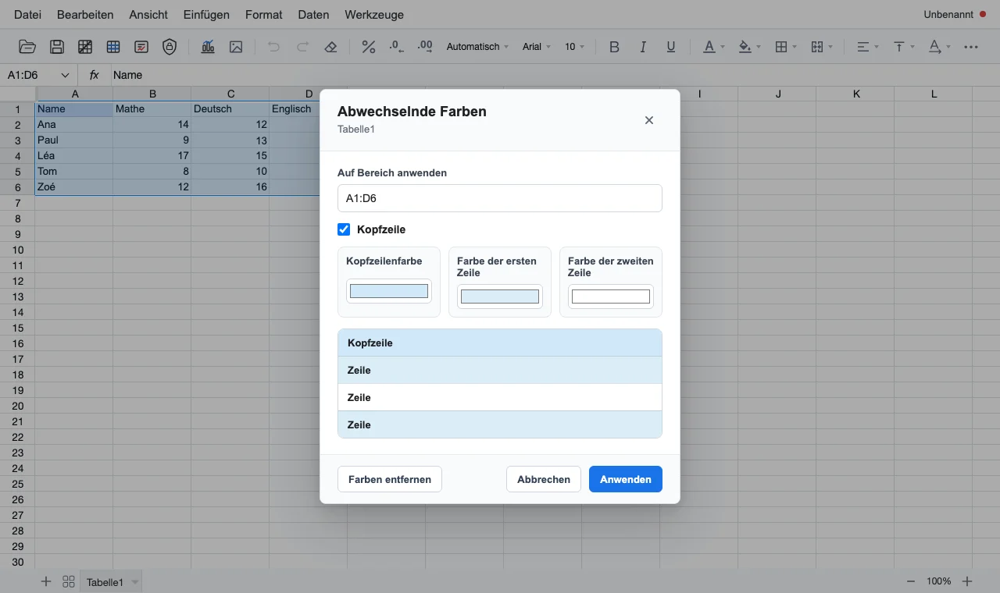

Formatierung
Text
| Befehl | Zugang |
|---|---|
| fett, kursiv, unterstrichen | ; Strg B, Strg I, Strg U |
| Schriftart | Liste Arial: dreizehn Schriftarten |
| Größe | Liste 10 oder Format › Schriftgröße: 9 bis 72 |
| Textfarbe, Hintergrundfarbe | |
| Formatierung löschen | , Format › Format löschen |
In der Palette einer Farbe entfernt Farbe zurücksetzen sie; Benutzerdefiniert öffnet die Farbauswahl des Systems.
Während der Bearbeitung einer Zelle gilt die Formatierung für den ausgewählten Teil des Textes.
Ausrichtung
| Befehl | Auswahl |
|---|---|
| horizontal | links, zentriert, rechts |
| vertikal | oben, Mitte, unten |
| Drehung | geneigt, vertikal, gestapelt |
| Umbruch | Überlauf: über die leeren Nachbarzellen; Umbruch: auf mehrere Zeilen; Abschneiden: am Rand abgeschnitten |
Ohne gewählte Ausrichtung stehen Zahlen und Daten rechts, alles andere links.
Rahmen
zeichnet den gewählten Rahmen; sein Pfeil gibt die Seiten (oben, außen, innen, alle, keine, diagonal), die Farbe und den Stil der Linie. Farbe und Stil vor der Seite wählen.
Verbinden
oder Format › Zellen verbinden:
| Befehl | Wirkung |
|---|---|
| Alle verbinden | eine einzige Zelle, die einen einzigen Inhalt behält |
| Vertikal verbinden | eine Zelle pro Spalte |
| Horizontal verbinden | eine Zelle pro Zeile |
| Verbindung aufheben | stellt die Zellen wieder her |
Ein Bereich mit verbundenen Zellen kann weder sortiert noch gefiltert werden.
Abwechselnde Farben
oder Format › Abwechselnde Farben... färbt jede zweite Zeile des ausgewählten Bereichs, auf Wunsch mit Kopfzeile. Die drei Farben sind wählbar.

Es sind gewöhnliche Hintergrundfarben: sie folgen weder einer Sortierung noch einer eingefügten Zeile. Farben entfernen löscht sie aus dem Bereich.
Gitternetzlinien
oder Ansicht › Anzeigen › Gitternetzlinien blendet die grauen Linien in allen Blättern der Mappe aus oder ein. Der Druck hat seine eigene Einstellung.
Für eine vom Wert abhängige Farbe siehe Bedingte Formatierung.